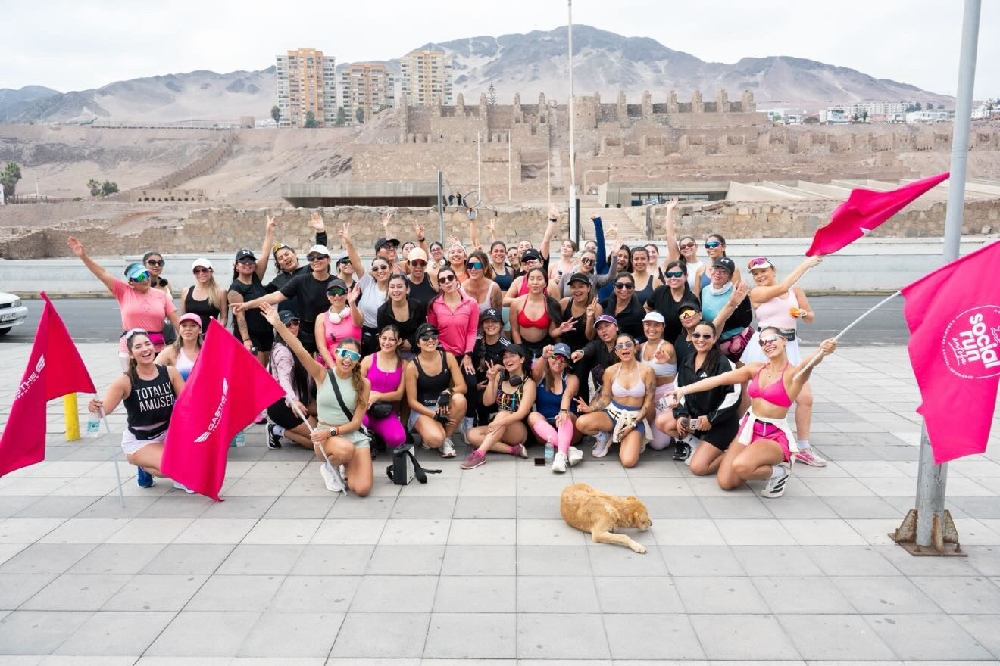
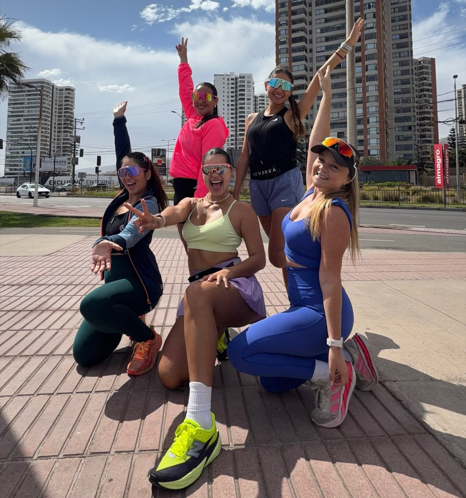
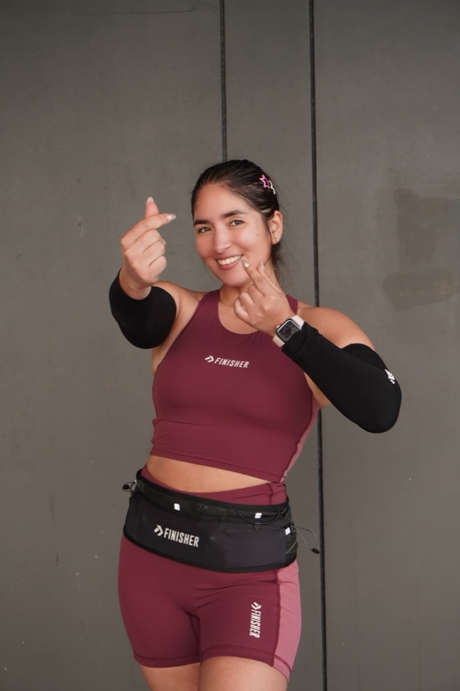
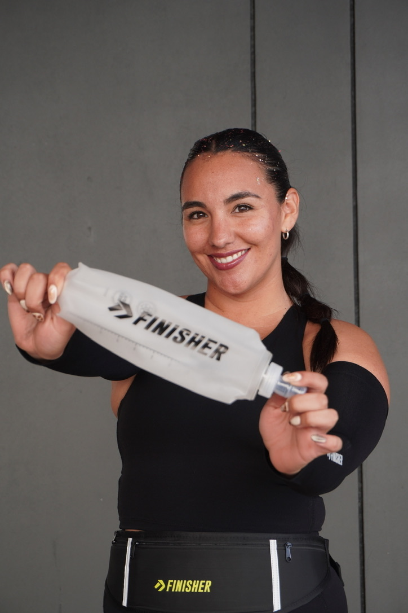
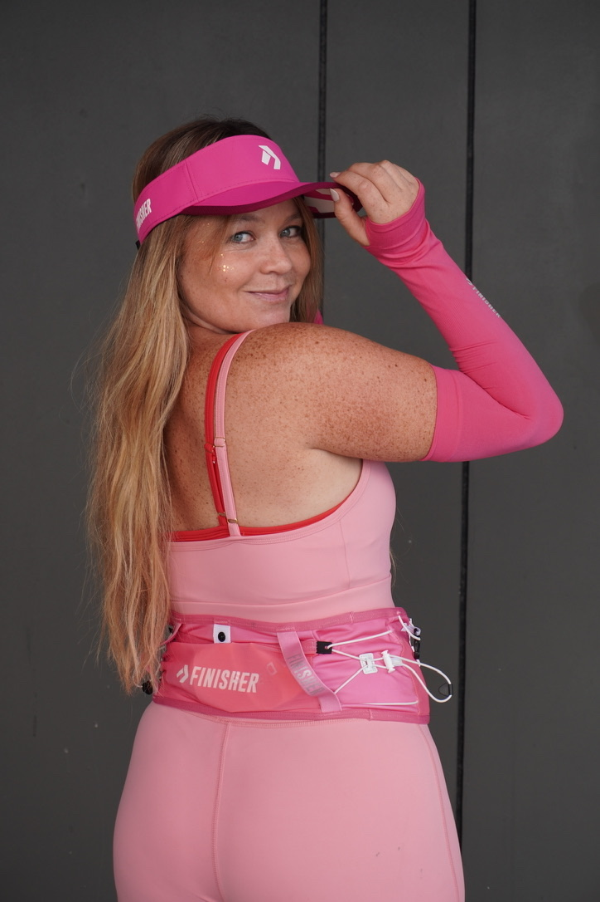
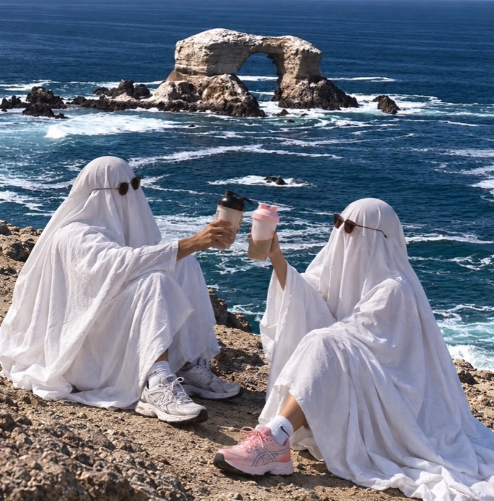

5K solidarios por la Teletón
Próximo social run
7de noviembre, sábado
- Hora
- 09:30 hrs
- Lugar
- Balneario Municipal de Antofagasta
- Quién
- Abierto a todo público
Más de 4.000 mujeres. Casi todos los fines de semana, frente al mar.
Próximo social run
7de noviembre, sábado

Somos cinco amigas unidas por una pasión, el running. Nos mueve crear espacios seguros para la comunidad en Antofagasta, sobre todo para las mujeres, y lo hacemos con todo el corazón.


Divertida y graciosa. Si te quedas sin energía, ella te devuelve las ganas.

Nos saca risas y nos hace cantar karaoke mientras corremos.
La Terrenator. Seca, poderosa y corre harto. Si hay un cerro, ella ya va arriba.
Graciosa, tierna y divertida. Siempre está cuando la necesitas.

Siempre llega con una idea nueva, y entre todas la hacemos realidad.
Un día, conversando, surgió la pregunta. Y si nos juntamos a correr? No le dimos muchas vueltas.
Hemos recuperado espacios del borde costero, llenándolos de mujeres que corren.
Muchas de las chicas que llegan a los social runs empezaron a entrenar también durante la semana, y hoy se ven muchas más mujeres corriendo por la costa. Es un paso en el largo camino de ganar espacios públicos para las mujeres.
Publicamos cada social run en nuestro Instagram.
El link está en nuestro perfil.
Ven sola o con tu partner. Acá te vas a encontrar con muchas más.
No necesariamente. Vamos a 7 minutos por kilómetro, un ritmo en el que se puede conversar.
Por lo general corremos dos distancias, 3K y 5K.
Sí. Ven sola o con tu partner, acá te vas a encontrar con muchas más.
Casi todos los fines de semana. Publicamos cada fecha en nuestro Instagram.
Con el link que está en nuestro perfil de Instagram.
Por ahora los social runs son gratis.
Nuestros social runs son para mujeres. Si son niños pequeños no hay problema, y eventualmente hacemos eventos familiares, como el de Halloween.
Ropa cómoda, zapatillas para correr y agua. Y recuerda echarte bloqueador.
Costará $5.000 e incluirá los descuentos en nuestras marcas aliadas y una actividad privada al mes.
Escríbenos a socialrunantofa@gmail.com o por Instagram a @socialrun.antofa.

El Pase VIP incluirá los descuentos en nuestras marcas aliadas y una actividad privada al mes. Correr con nosotras sigue siendo para todas, y con tu pase además apoyas a la comunidad.
Pase VIP $5.000, muy pronto
Somos más de 4.000 mujeres que se juntan casi todos los fines de semana en el borde costero de Antofagasta. Si tu empresa quiere estar cerca de esta comunidad y aportar a la ciudad, armemos una alianza a tu medida.
Ya trabajamos con Creo